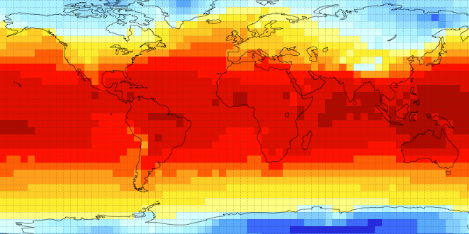

Earth2.0 is a game about climate change. It functions as a user interface for a simple, climate-driven population model.
You play by enacting the decisions that make or break a population of autonomous agents who live on a treachorous model earth.
Your objective is to guide the whole system into an equilibrium by managing a dynamic population and the environment on which it depends. Good luck!
...
The output from models drives forward climate science , helping people understand how human activity is affecting the Earth’s climate.
Human populations do not stand still. Population models are invaluable in exploring the impacts of our actions for present and future generations.
Games on the subject of climate change are well-suited to address the challenges of scientific communication and engagement; we learn when we play.
Earth2.0 is not supposed to replicate earth's climate. Instead, it is a platform to explore wild, fictional scenarios. In doing so, we can better understand relationships between organisms and their environment.
Even simple relationships can give rise to complex behaviours. John Conway's game of life (click the example below) uses four rules to decide whether a particular cell lives or dies in each generation, creating an interesting automated population of cells.
Earth2.0 will use a similar generation-based game design, where simple rules tell each individual whether to move, consume resources (turn vegetation into no vegetation), multiply, or die.
The population will have basic requirements for land, water and food. On top of this, they can only tolerate a particular set of environmental conditions, which influence their demographic behavious.
The world that our population inhabits is not static either. Basic rules will simulate the transfer of energy across grid cells (like those above and below) to determine climate. The population alters its environment via vegetation consumption and gas emissions.
The main component of the interface will be a scalable web map, consisting of a small number of 'climate cells', which regenerate monthly. These cells are further divided into 'population cells', which regenerate daily.
Players will have control over how the population organises over time, where it develops and how it consumes resources. Players will have to manage trade-offs between population hapiness, productivity and survival to keep things afloat!
The idea is to spark thinking about real world environmental conflicts and interventions. So educators, students, decision-makers and anyone with interests in climate science and policy.
As a student of Geography and Maths, I've sought visual tools to understand complex systems. In the field of climate modelling, I believe I can bridge a gap between very simple and very complex learning tools.
Some ideas about what would make a fun and interesting game. Support from people with expertise in game development, climate modelling, climate change education and software development.
Space to develop ideas and skills. People to test things against. Time to learn more javascript, p5 (from which many of the examples on this page were based), AWS.
To support this idea, I am applying for a BLUE Fellowship at McGill's b21.
The fellowship would afford me the time and space to fully develop these ideas, to build (and recruit) the skills necessary to implement them, and to create something that just might be of use to other people.
Thank you for your consideration!